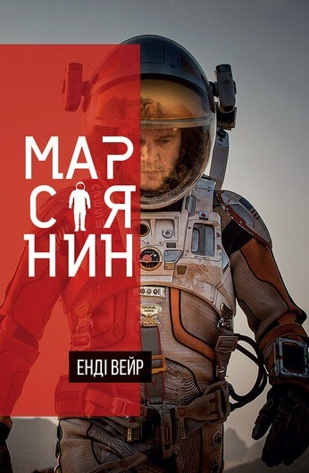

Ласкаво просимо!
Цей сайт присвячений моїй улюбленій науково-фантастичній книзі «Марсіянин». Тут ви дізнаєтеся про те, як інженерна думка та незламна воля допомагають вижити на іншій планеті, познайомитеся з біографією Енді Віра, зануритеся у сюжет та головних персонажів, а також зможете прочитати мої особисті враження.
Обкладинка видання
